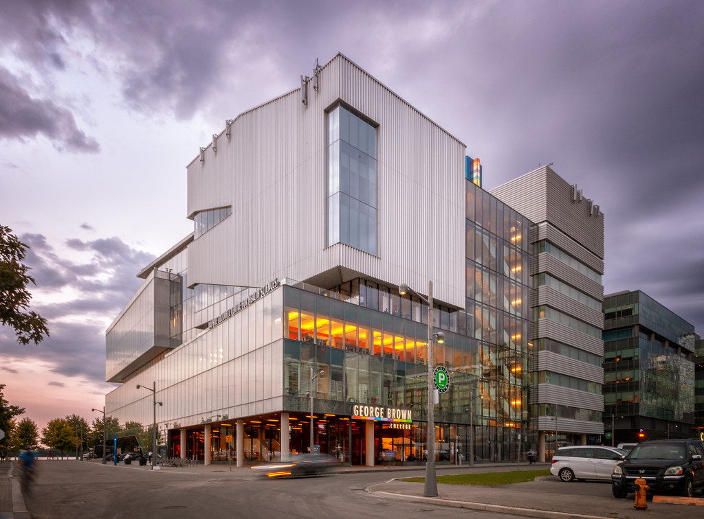
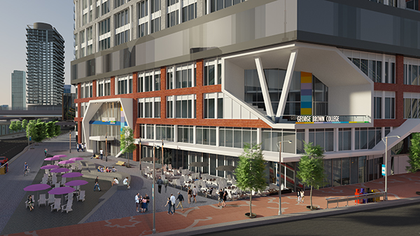

interaction design program (G103)
overview
| program name | code | duration | credential | starting month |
|---|---|---|---|---|
| interaction design (previously Interaction Design and Development) | G113 (previously G103) | 3 years | ontario college advanced diploma | september, january |
description
Interaction Design is an interdisciplinary field merging design skills such as user experience, interface development and graphic design with coding fundamentals to create meaningful experiences between the user and digital platforms such as social media, websites, wearables and mobile devices. Modified by the psychological, social, economic and cultural factors that shape our present and future world, this ever-evolving field envisions new ways of human-computer interaction within systems, services, products and spaces across multiple industries. Throughout the Interaction Design and Development program, students will be expected to address such topics as mixed realities, immersive environments, usability, spatial relations and human factors. Students will engage in research, design, testing and group work to create original interactions in a way that is meaningful and practical.
your career
Graduates of this program will have acquired the skills necessary to be employed in various digital media studios, with careers such as:
- information architect
- interaction designer
- mobile desginer
- mobile developer
- producttion artist
- 3D visualization artist
- motion designer
- user experience designer
- user interface developer
- web designer
- web developer
- SEO/SEM dpecialist
educational / degree pathway

program standard and learning outcome
The graduate has reliably demonstrated the ability to:
- collaborate in a team environment with various stakeholders to design multi-disciplinary products and services.
- apply the appropriates of a complex interactive media project.
- assess the requirements of a complex of an interaction design project in response to resource and bugetary requirements.
- plan the development and execution of an interaction design project in response to resource and budgetary requirements.
- design a complex media project (interface, navigation, graphics, text treatment) using best practice design and development principles, and applying conceptual and theoretical frameworks.
- make interactive products, environments, systems and services using appropriate technologies, materials, and manufacturing methods.
- perform all work in compliance with regulations, legislation, security policies, industry standards and codes of ethics.
- use research skills to assess and inform optimal digital user experience within interactive interfaces.
- apply creative and innovative thinking techniques to manage change and solve design problems.
- make recommendations based on human computer interaction design guidelines to improve user experiences with interaction design.
- design an interactive product or service that delivers a usable interactive experience.
- contribute to a variety of interactive platforms and environments, incorporating the principles and elements of design.
- create a design solution in accordance with strategies, recommendations and state of the art methodologies.
required courses
semester 1
| code | course |
|---|---|
| INTR1001 | 2D Visualization |
| INTR1002 | Information Architecture 1 |
| INTR1003 | Visual Design |
| INTR1005 | Technology Drawing 1 |
| INTR1006 | Interactive Systems |
| COMM1007 | College English |
semester 2
| code | course |
|---|---|
| INTR1011 | 3D Visualization 1 |
| INTR1012 | Information Architecture 2 |
| INTR1013 | Information Design |
| INTR1015 | Technology Drawing 2 |
| INTR1004 | Usability Testing |
| COMM1029 | Design Culture |
semester 3
| code | course |
|---|---|
| INTR2001 | 3D visualization 2 |
| INTR2002 | interface developer 1 |
| INTR2003 | communication design |
| INTR2004 | usability tesing |
| INTR2005 | branding and strategies |
| GNED | general deucation elective |
semester 4
| code | course |
|---|---|
| INTR2011 | 3D Visualization 3 |
| INTR2012 | interface development 2 |
| INTR2013 | spatial designand immersive envieonments |
| INTR2014/td> | semiotics |
| INTR2015 | social networks |
| GHUM1089 | sequential arts |
semester 5
| code | course |
|---|---|
| INTR3001 | interactive video |
| INTR3002 | device development 1 |
| INTR3004 | ergonomics |
| INTR3006 | portfolio 1 |
| INTR3008 | interactive systems project 1 |
| GNED | general deucation elective |
semester 6
| code | course |
|---|---|
| INTR3011 | augmented reality |
| INTR3012 | device development 2 |
| INTR3013 | human-computer interaction |
| INTR3015/td> | digital publishing |
| INTR3016 | portfolio 2 |
| INTR3018 | interactive systmes project 2 |
| or | |
| INTR3030 | field placement |
| *Optioanl Field Placement. | Students are able to graduate without Fild Placement. |
Admission Requirements
Applicants are selected on the basis of their academic achievement, including the required courses, and any other selection criteria outlined below.
- Ontario Secondary School Diploma or equivalent**
- Grade 12 English (C orU)
- Application Questionnaire*
*Qualified applicants will be invited to complete the application questionnaire electronically. Details on the application questionnaire will be communicated at a later date to qualified applicants, as part of the review process.
**Mature Student Status (19 Years of Age or Older and No OSSD)
Mature Students may take the Admissions Assessment for English, OR may consider upgrading to achieve the credit(s) needed in English. Please note that George Brown is committed to ensuring that applicants will succeed in their program of choice and meeting the minimum requirements does not guarantee admission to the program. Applicants may be required to have grades higher than the minimum requirements stated.
Course Exemptions
College or university credits may qualify you for course exemptions. Please visit HERE for more information.
Internation Students
Visit the International Admissions page for more information.
Tuition and Fees
$ 8,745.00*
Additional Cost
*Amounts listed are the total of tuition, materials(non-refundable), student service and ancillary fees for the first two semesters of programs starting in Fall 2019. Fees are subject to change for programs starting in Fall 2020 and at later dates.
International Students: Visit the International Fees and Related Costs page for more information.
Financial Assistance
The OSAP eligibility for this program has yet to be reviewed by the Ministry.
Disclaimer: The information contained in this online calendar is subject to change without notice. It should not be viewed as a representation, offer or warranty. Students are responsible for verifying George Brown College fee requirements.
Related Programs
School Information
Geroge Brown College Waterfront Campus
| W: Daphne Cockwell Centre for Health Sciencces | WFD: School of Design |
|---|---|
| 51 Dockside Dr, Torotno, ON, M5A 0B6, Canada | 3 Lower Jarvis St, Toronto, ON, M5E 3Y5 |
|  |  |
Things for Design Student on Campus
- Library for Design students
- Peer Tutoring
- Available to use 3D printer